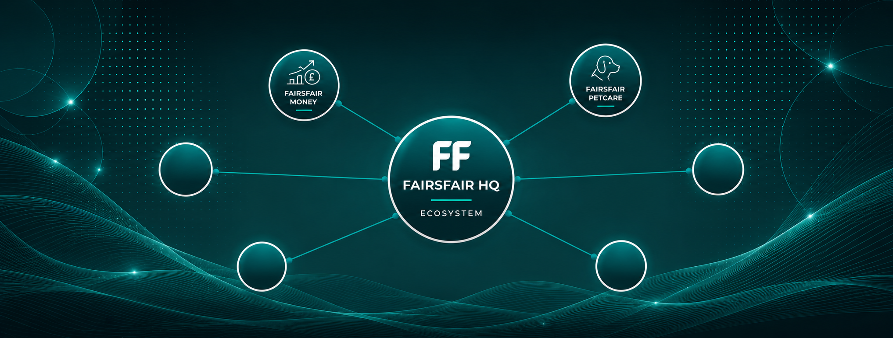

Calm
Interfaces and language that lower stress rather than amplify it.
Ecosystem HQ
FairsFair is a family of practical tools that reduce uncertainty, friction, and cognitive load — so you can act with confidence.

What is FairsFair
FairsFair exists to help people feel more informed, less overwhelmed, and more capable — across the domains that matter in daily life.
Interfaces and language that lower stress rather than amplify it.
Forecast-oriented thinking and clear outcomes you can rely on.
Tools shaped around real workflows, not engagement metrics.
Explainable systems, explicit confirmations, and privacy-aware design.
The defining characteristic of FairsFair is not technology — it is confidence. Each product stands on its own while sharing the same quiet intelligence.
Ecosystem overview
befairsfair.com is the central layer for discovery and trust. Product verticals run on their own domains, deployments, and roadmaps — connected by design, not forced into one monolithic app.
Ecosystem overview, company identity, and navigation.
befairsfair.comOperational assistance for owners, carers, and coordinators.
petcare.befairsfair.comAdditional domains as needs emerge — same calm standard.
FairsFair Money
FairsFair Money is a privacy-first financial awareness platform for individuals, couples, families, and caregivers. It focuses on forecasting and future visibility rather than anxiety-inducing dashboards.
FairsFair Petcare
Petcare is being built as calm operational assistance for pet owners, walkers, groomers, and coordinators — especially when hands are busy and timing matters.
Future verticals
The ecosystem is designed to welcome new products over time. Each vertical keeps its own repository, deployment pipeline, and application architecture — while sharing typography, colour, and behavioural principles.
AI & human assistance
AI and voice across FairsFair act as intent suggestion and workflow assistance systems. They reduce repetitive work and summarise complexity; they do not replace judgement or write data without your say-so.
Speech or text is parsed into a structured proposed action.
You see forecasts and consequences before anything changes.
Persistence and recalculation only happen after you approve.
Useful when needed. Invisible when not. No hidden automation. No engagement-maximising nudges.
Privacy & trust
Trust is built through explainable automation, privacy-aware architecture, and products that earn confidence through competence — not through noise.
Especially in financial tools, design choices favour awareness and control over surveillance-style patterns.
Voice and AI-generated actions require clear approval before they affect your records.
Future systems such as emergency pet profiles are designed with GDPR-aware, user-led sharing.
We optimise for long-term usefulness and calm operation — not time-on-screen.